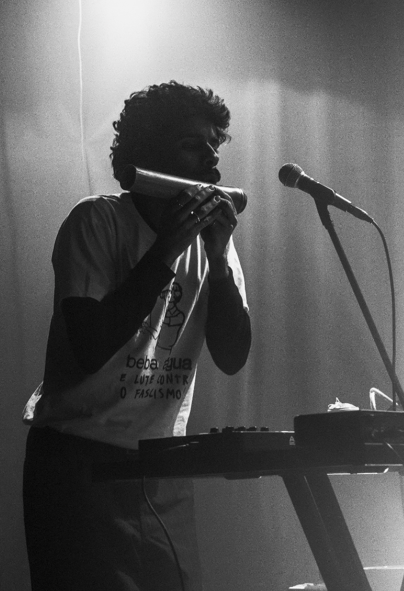
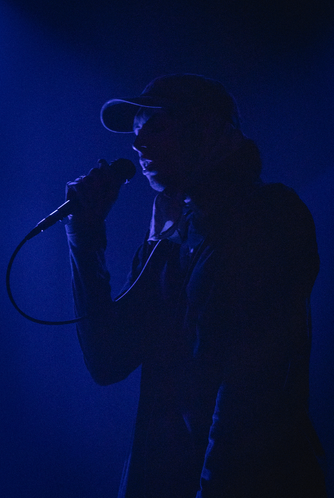
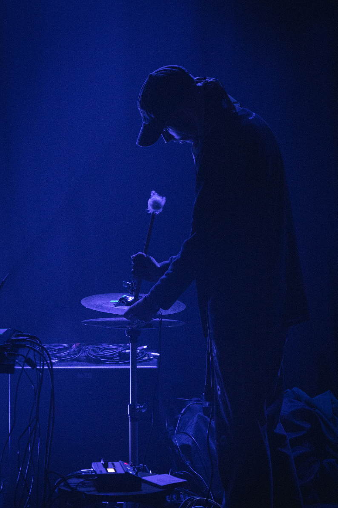
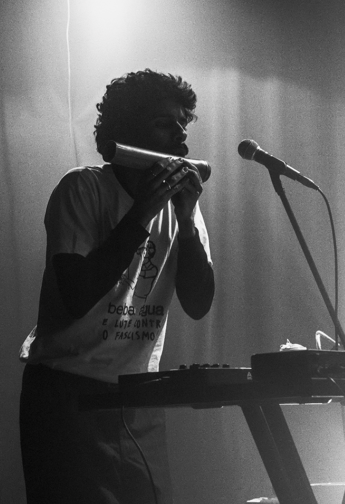
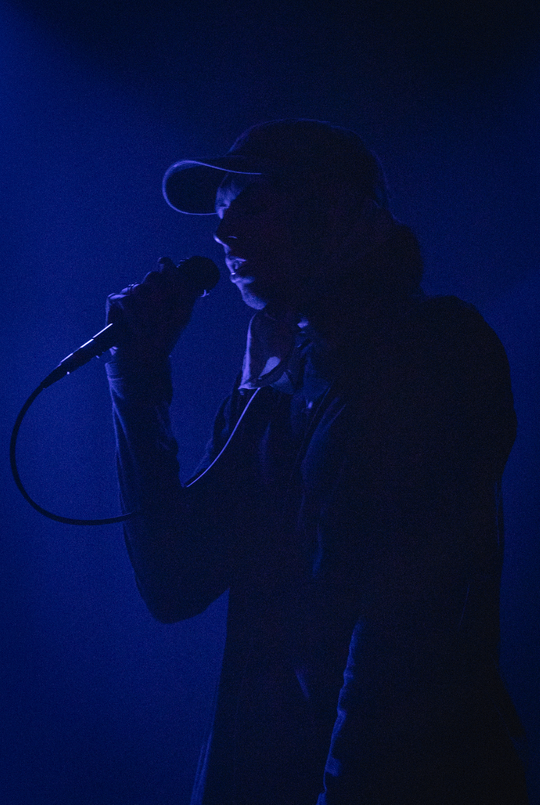
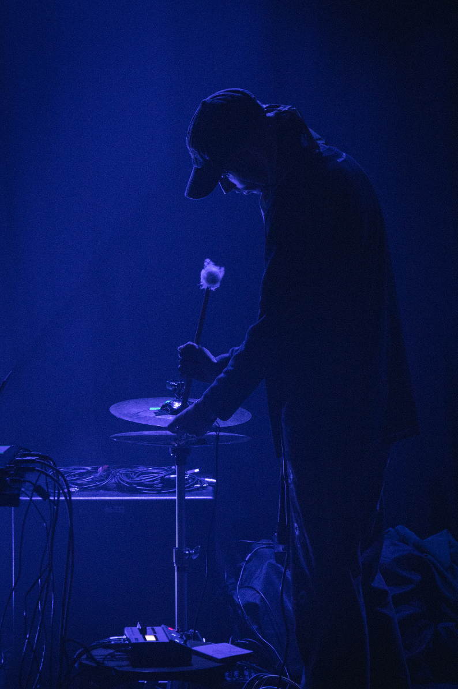

this is : the first time you saw a butterfly
2025.06 event : luca // venue : hotelier // city : porto
video
2025.11 venue : casa da firoozeh sol // city : Vila Real
camera didn't record :(
2025.12 venue : radioclube agramonte // city : porto
fotografias


2025.12 venue : cru // city : famalição
soundcloud
2025.12 event : fritarias // venue : amparo // city : porto
video
fotografias
 




